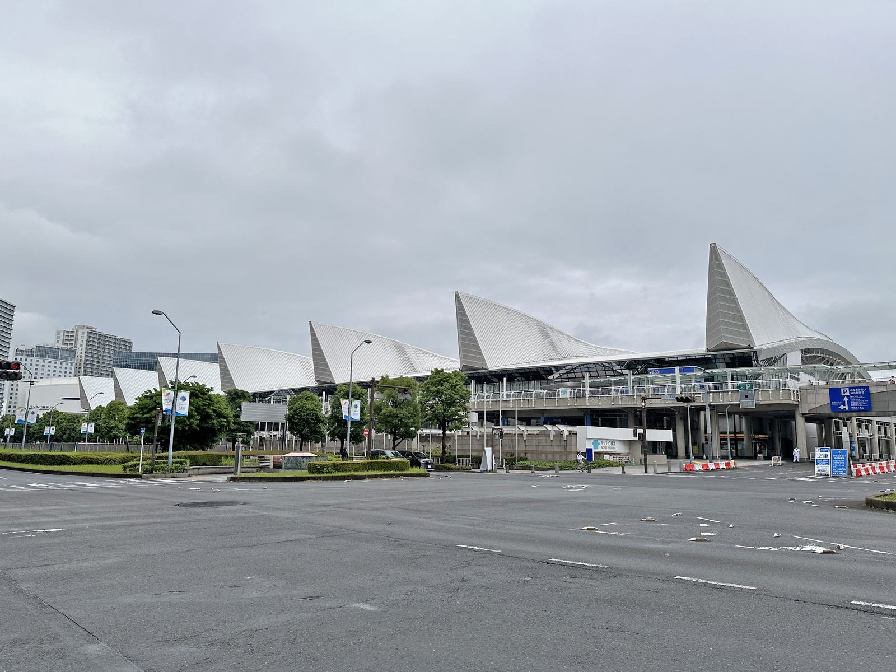
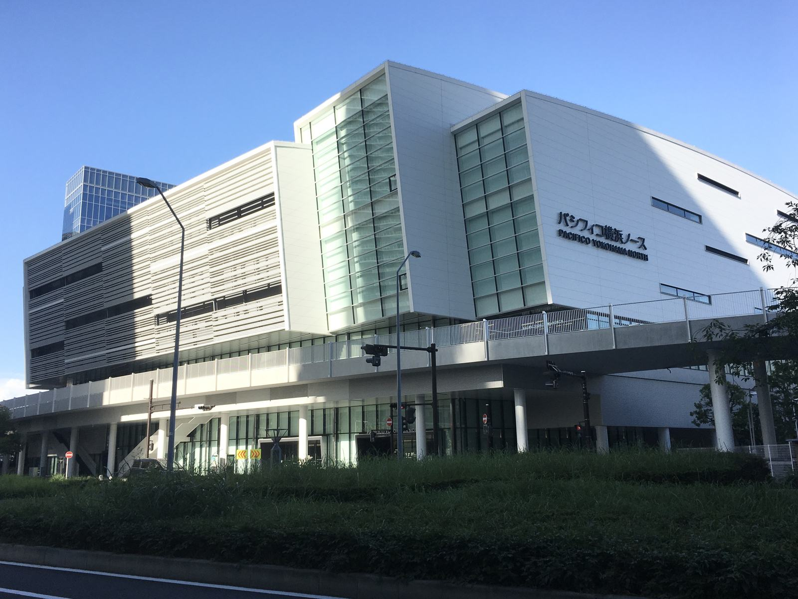

Venue · Convention centre
PACIFICO Yokohama
- Type
- Convention centre
- Location
- Yokohama, Japan
- Address
- Nishi-ku, Yokohama, Kanagawa, Japan
- Exhibition space
- 20,000 m²
- Halls
- Official Exhibition Hall guide: exhibition area of 20,000 m², column-free, maximum ceiling height 19 metres, divisible into four units and six layout patterns.
- Official website
- https://www.pacifico.co.jp/english/
About
Yokohama’s waterfront convention and exhibition complex. Official Exhibition Hall PDF: 20,000 m² column-free exhibition area, divisible into four units. Official people capacities for the hall were not confirmed from that official guide in this pass, so capacity_max_delegates is null. The atlas string for the Japan International Boat Show 2027 names ‘Pacifico Yokohama and Yokohama Bayside Marina’; only PACIFICO Yokohama is recorded here, and the marina is not added as a conference venue. A street number was not confirmed from the official English pages captured in this pass, so the stored address is the official Nishi-ku / Yokohama locality rather than an invented street. Coordinates are the Nominatim named events-centre pin for パシフィコ横浜 (the atlas event pin was marked imprecise because it covered the dual marina string).
Spaces
| Name | Type | Capacity | Area |
|---|---|---|---|
| Exhibition Hall | — | — | 20,000 m² |
Official documents
Upcoming events
Sources
- Official source — https://www.pacifico.co.jp/english/guide/exhibition
- Official source — https://lp.pacifico.co.jp/hubfs/exhi/guide/english/Exhibition_Hall_en.pdf